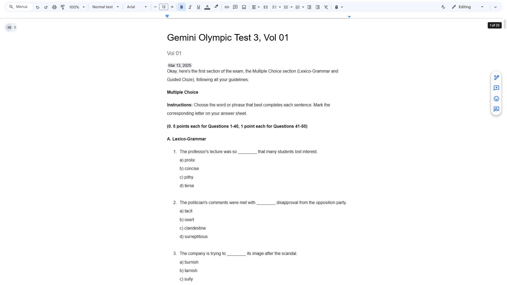
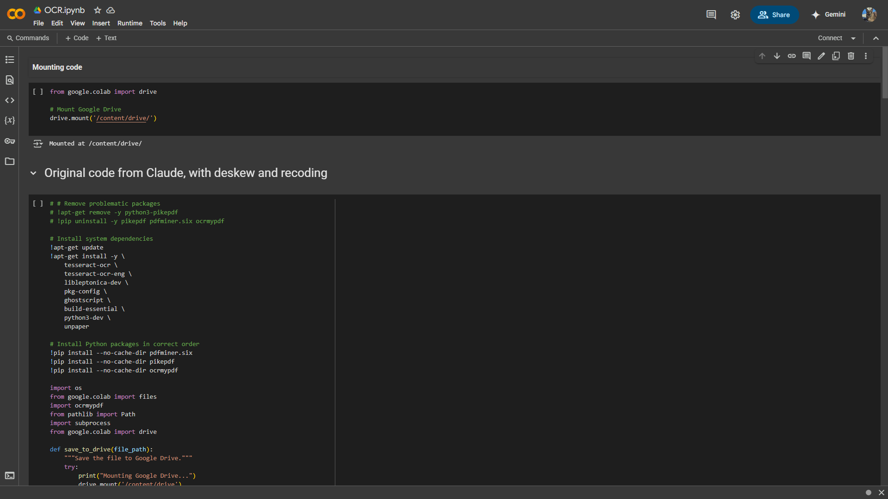
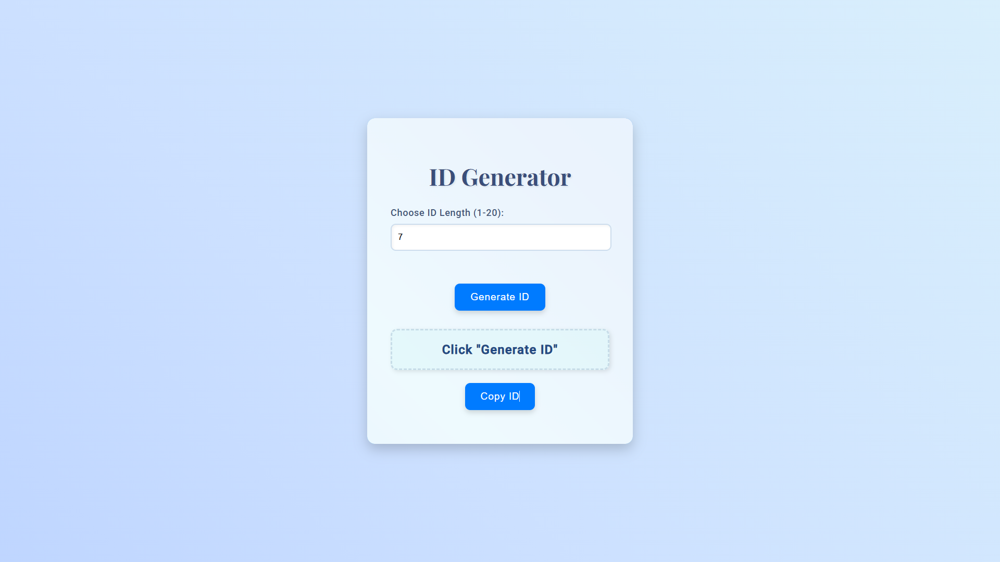
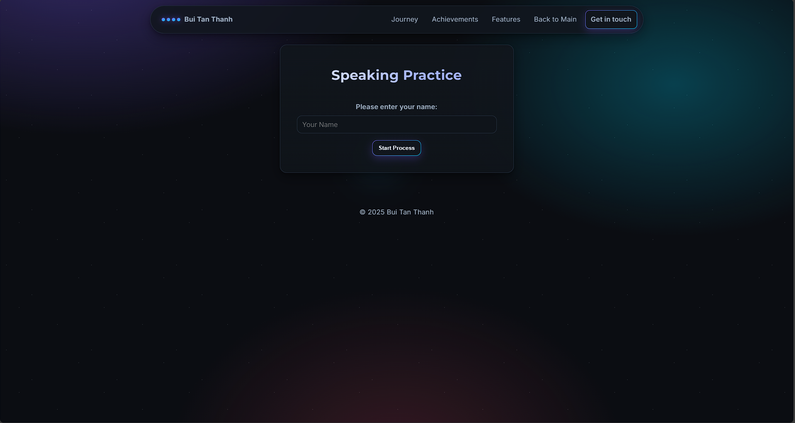
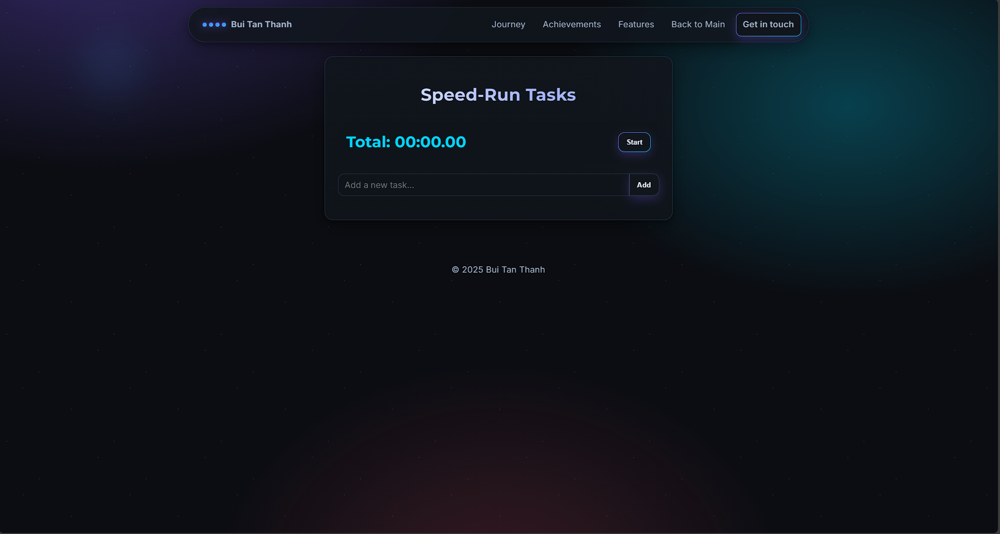
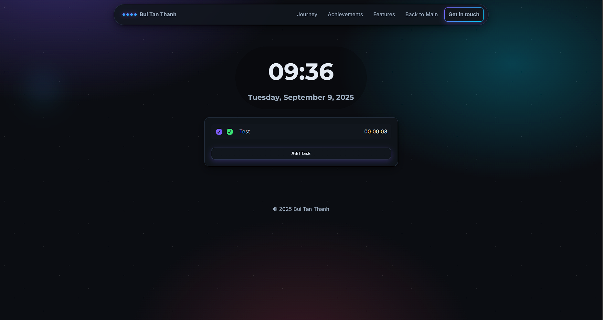

A growing set of small, purposeful builds. Most are quick to try.

AI Listening Test Generator
Create practice listening tests from audio using AI.

Olympic 30/4 Practice
Curated tests to help students prep for the 30/4 competition.

n0ventum Habit Tracker
Track daily habits with streaks, badges, and insights.

HSGQG Test Generator
Full exam creation from text, audio, or YouTube.

OCR & Linking
Fast capture from images with auto‑linking to notes.

Linker
Turn research into connected references with one click.

Speaking Practice
Timed prompts + recorder. Save your audio for review.

Speed-run Timer
Measure focused sessions with accurate split times.

Study Workspace
Minimal clock + notes + task tracker for deep work.

Kanban Board (timed)
Drag‑and‑drop with effort tracking and confetti for wins.